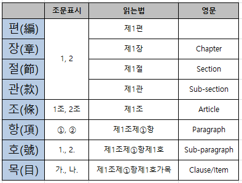
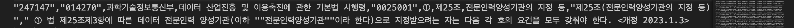

개발환경 설정
중요 : API 사용방법 익히기
- openai api
- 법령정보 API 받아오는 방법
- https://open.law.go.kr/LSO/main.do(api, 국가법령정보 공동활용 홈페이지)
- 회원가입 필수!
TODO
- 개발환경 설정 (IDE, 개발언어, 패키지, 코드 저장소 등등)
- Data Ingestion 및 EDA
- 국가법령사무예측 예측개발 방법론: 예측모형 전반 (모형 가치, global model, many models, etc)
- 국가법령사무예측 모형 설계서 (EDA 바탕 Feature Engineering, ML 모형, performance metrics, 등등)
개발환경설정
- 개발언어 : Python
- IDE : Anaconda, VSCode
- 패키지 : numpy, pandas, scikit-learn, pytorch, transformers(hugging face)
- 코드 공유 및 코드 저장소: github - cgbside repo
EDA
0. Source
- edaing.ipynb
- final.pdf
- codebook_2022.xlsx
1. Law_MST.csv 파일 로드
- 349810행 호출 오류
💡 “251889”,“001740”,해양수산부,선원법,“0007001”,④,제7조,출항 전의 검사ㆍ보고의무 등,“제7조(출
“” (따옴표)로 감싸지 않아서 파싱 과정에서 오류가 발생 (잘못 복사된 파일)
파일의 EOF가 잘못 설정되어 이를 수정함 ⇒ 혹시 349810행 뒤에 짤린 부분이 있는지 확인 필요
- 따라서, 이를 제외하고 csv 파일을 로드하였음.
data = pd.read_csv('law_mst.csv')- Output
2. Feature 설명
| Feature | 설명 | 처리방법 |
|---|---|---|
| law_seq | 법률, 시행규칙, 시행규칙 전체 연번 | 정확히 무엇인지? |
| law_id | (법마다 다르다) | 정확히 무엇인지? |
| jdt_dept_nm | 소관부처 부처 개수, 부처명 등 파악하기 | |
| law_kor_nm | 법령명 | |
| provision_key_no | 포맷 : _ _ _ _ _ _ _ (1) _ _ _ _ /_ _ 앞 6자리 숫자: 조(4자리)의 몇(2자리) ex) 제 1000조의 1 : 1000 / 01 ex) 제 1조 : 0001 / 00 ex) 제 15조의 19 : 0015 / 19 (2) _ 맨 뒤 1자리 숫자: 0 -> 장, 1-> 장 아님 |
-맨 뒤 숫자가 1인 경우, 조 번호만 추출 -맨 뒤 숫자가 0인 경우, 행 삭제 |
| clause_no | 원숫자 O → 각 항번호 1 → 항 없이 호만 있음 nan → 항과 호 모두 없는 법령 |
|
| provision_no_nm | 조 한국어 표기(ex. 제1조, 제2조) | |
| provision_title | 조 제목 | |
| provision_cont | 조 내용 | |
| clause_cont | 항 내용 |

+ 대한민국 정부 조직도 체계 참고사항으로 넣기
+ 정부조직이 업데이트 시(승격 등), 어떻게 반영할 것인지?
+ 시군구 업데이트 시(승격 등), 어떻게 반영할 것인지?
+ 업데이트 될 때마다 바로 반영이 가능한가?
+ 그리고 현재, Law_MST.csv에는 따로 사무여부 등의 레이블링이 되어있지 않은데 그렇다면 학습용데이터는 2019년 자료를 활용해야 하는 것인가?
그렇다면.. 우리가 학습해야 할 데이터는.. 2019사무목록 최종본(인쇄용 최종).xlsx 파일인데 (레이블링이 되어 있으니) 그렇다면 Law_MST.csv는 어디에 사용하는 걸까?
3. EDA - excel 파일
- 결측치 확인: ‘항’, ‘비고’ column만 null값 존재

- unique값 확인
- 조문 제목과 사무 유형은 동일한 내용임에도 띄어쓰기가 다르게 되어 있는 경우 있었음 ⇒ replace 함수 통해 띄어쓰기 제거
| column명 | 원래 unique 값 | 띄어쓰기 없앤 후 unique 값 |
|---|---|---|
| 소관부서 | 41 | 41 |
| 법령 | 2859 | 2859 |
| 조문제목 | 30034 | 29544 |
| 사무명 | 56789 | 56418 |
| 사무유형 | 33 | 16 |
| 비고 | 4036 | 3843 |
+) 비고의 경우, 오탈자 존재(ex. 가획재정부 장관) / 동일한 기관 다른 표기 존재(ex.기획재정부 장관, 기재부 장관)
4. EDA를 통해 세운 전처리/모델링 전략
‘소관부처’, ‘법령’, ‘비고’ 라벨 인코딩하여 사무 유형 classification 진행해보고자 함
law_mst.csv 파일과 2019사무목록 최종본.xlsx 파일의 연도 정보가 일치하지 않음
law_mst.csv 파일과 2019사무목록 최종본.xlsx 파일을 ’조와 항’을 key로 하여 left join하면 사무인지 아닌지도 파악할 수 있음 (join한 후, 사무명, 사무유형, 비고가 NaN이면 비사무)
⇒ 그러나, 이를 위해서는 2번 문제가 해결되어야 함
- 사무명의 경우, 법령에서 괄호 속 텍스트 추출하는 방식으로 처리
2019사무목록 최종본(인쇄용 최종).xlsx
- 이 파일에는 아래와 같이 레이블링된 사무목록들이 들어있다. 하지만, 사무가 아닌 법령은 제거되어 있는 등(모든 법령들이 들어있지 않다!), 자체적으로 전처리가 되어있는 자료이다. 또한 법의 특성상(?) ’호’는 ’사무’에 대한 내용을 담고 있진 않은듯? 상위의 ’조’나 ’항’에서 ’사무명’을 추출할 수 있는 듯하다.
| 연번 | 소관부처 | 법령 | 조 | 항 | 조문제목 | 조문 | 사무명 | 사무유형 | 비고 |
|---|---|---|---|---|---|---|---|---|---|
예측개발 방법론
<개발 목적 및 프로세스>
사무 여부 O/X
사무 여부가 O 일 때, 사무 수행 주체 파악
→ 데이터 사전 구성? (부처에 뭐가 있는 지 미리 작성)
위탁 여부 파악 O/X (위탁이 O인 경우 사무 수행 주체 소분류 컬럼 추가 생성 필요)
사무 유형 파악
—> 부처명, 시군구 범위 변경 시에도 반영이 가능해야 함.
<목표: 사무유형 classification : 16개 >
**** 어떤 프로세스를 적용할까요?!***
** 프로세스 : 문서 구조 분석 -> 엔터티 추출 및 분류 모델(NER 모델을 통한 사무주체 추출) -> ‘위임’,’위탁’등의 관계를 분석하는 알고리즘(종속관계 파악하는 관계 추출 기술…?) -> 모델 학습(어떤 방법론이 가능할지는?) -> 모델 성능 평가 및 하이퍼파라미터 조정 -> 실제 환경에 통합 및 사용자 인터페이스를 통한 결과 제공*
[시도 방법1] 문서 구조 분석 -> 엔터티 추출 및 분류 모델(NER 모델을 통한 사무주체 추출) -> ‘위임’,’위탁’등의 관계를 분석하는 알고리즘(종속관계 파악하는 관계 추출 기술…?) -> 모델 학습(어떤 방법론이 가능할지는?) -> 모델 성능 평가 및 하이퍼파라미터 조정 -> 실제 환경에 통합 및 사용자 인터페이스를 통한 결과 제공
[시도 방법2] ‘소관부처’, ‘법령’, ‘비고’ 라벨인코딩 ⇒ 머신러닝 기법(XGBoost, LightGBM, 여러 모델 앙상블) 적용
[시도 방법3] huggingface에서 nlp 모델 사용 ⇒ 딥러닝 기법 시도
모형설계서
| 개발 목적/프로세스 | 개발 방법론 | 사용 모델 | performance metric |
|---|---|---|---|
| 사무 여부 O/X | rule-based classification | if-elif 위임되면 사무X : ~령으로 정한다 |
f1 score, recall(사무가 맞는데 사무가 아니라고 분류되는게 더 위험하기 때문에) |
| 사무 유형 파악 | |||
| 사무 여부가 O 일 때, 사무 수행 주체 파악 | trial1) 문장에서 주어 추출 | ||
trial2) 수행 주체 데이터 사전 구성, 데이터 사전에 있는 명사 모두 추출 |
accuracy (수행주체 올바르게 추출한 데이터 수 / 전체 데이터 수) | ||
| 3) 위탁 여부 파악 O/X | rule-based classification(위탁이 O이면 경우에 따라 사무가 X가 될 수 있음.) | 정규표현식 사용(‘~조에 따른’ 표현이 있으면 위탁여부 O로 classify) | f1 score |
<의문점!>
- 법령정보api는 새로운 조문이 업데이트 되면 이를 학습할 목적으로 사용하는 것인지?
- 그럼 일단 학습은 기존의 2019, 2022년 정리된 조문을 바탕으로 학습하는 것인지?
- 위임, 조, 규칙, 시행령 등 서로 종속되어 있는 관계는 어떻게 학습을 하는 것인지?
- train / validation / test set 구분
- 2019사무목록 최종본(인쇄용 최종).xlsx 로 지도학습 실시 (확실하지 않음)
- Q: 그럼 Law_MST.csv 어디에 사용?
- Law_MST.csv로 Demo 시연